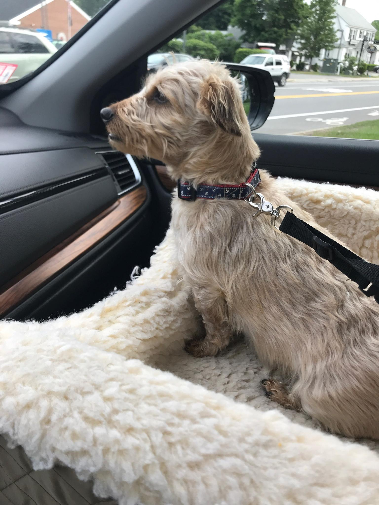
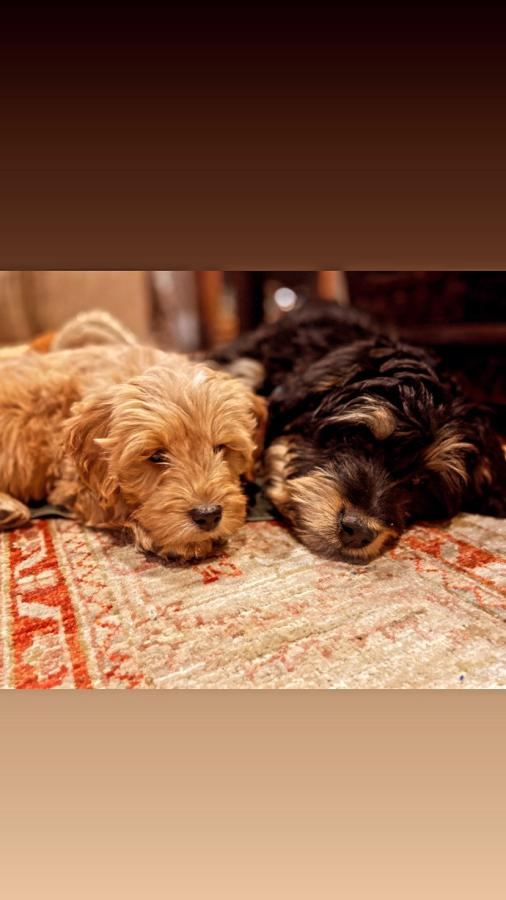

Here you will find a list of my favorite dog breeds along with some interesting/important information to know about them
Dachshunds are definitely the best dog breed out there. They love to go outside exploring but also love to cuddle. They truly love being with their owners and will often follow you around. These long and lovable creatures come in many colors with either long, short, or wired hair.
These gorgeous dogs are perfect for families as they are easily trained and are great playmates for kids. They are eager playmates for kids and some of the best companions. With their big eyes, long ears, and many coat colors, the Cocker spaniel is a great fit for anyone.
Bulldogs are often misinterpreted as being lazy dogs but they are actually justs very easygoing. Not only will you love them for their adorably squishy face, but also for their calm demeanor. These pups come in a variety of colors and patterns and need regular moderate exercise.

As one of the most popular dog breeds, golden retrievers are outgoing, trustworthy, and playful dogs. They are easy to train and very energetic. They love to play outdoors whether swimming, playing fetch etc. These dogs maintain their puppy behavior, making them some of the friendliest breeds out there.

Pugs are a great breed for anybody, no matter where you may be living. They are the ideal house dog and are happy in the city or country. They are also great with kids and elders and can be happy as an only pet or with other animals.

This crossover between bernese mountain dogs and poodles is one of the most lovable pups making it an ideal family dog. They love children and are great great companions during exercise. These lovable creatures seek lots of attention and you will always want to give it to them.

Here we have another crossover but this time its a golden retriever and a poodle. These dogs love people and are very playful. They love to do everything from exercising to cuddling with you and you can expect them to follow you around. You will certainly love these dogs as much as they love you!
This cross between a cavalier king charles spaniel and a poodle is our final mix of the list. You will fall in love with their round faces, floppy ears, and large sweet eyes and their coats can vary from black to white to chestnut to tricolor. They are kind and social with humans as well as other pets. They are also highly trainable making them the perfect pet.

Beagles are a breed that is both playful and calm. Although they are not very athletic, they love to play with kids and are not very aggressive.

These dogs might be very large, but they are very gentle and love to snuggle with humans. These dogs are strong but very affectionate with humans. Their almond-shaped brown eyes are very sweet and anyone looking for a big dog will certainly want one of these.